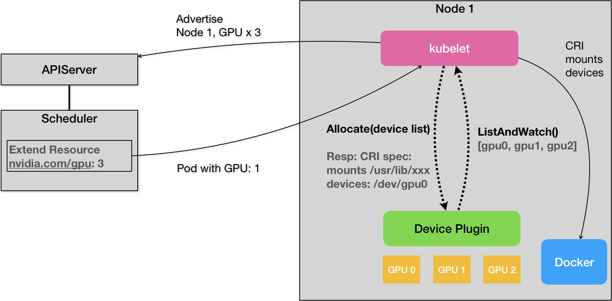

# Kubernetes GPU 管理与 Device Plugin 机制
2016 年，随着 AlphaGo 的走红和 TensorFlow 项目的异军突起，一场名为 AI 的技术革命迅速从学术界蔓延到了工业界，所谓的 AI 元年，就此拉开帷幕。
当然，机器学习或者说人工智能，并不是什么新鲜的概念。而这次热潮的背后，云计算服务的普及与成熟，以及算力的巨大提升，其实正是将人工智能从象牙塔带到工业界的一个重要推手。
而与之相对应的，从 2016 年开始，Kubernetes 社区就不断收到来自不同渠道的大量诉求，希望能够在 Kubernetes 集群上运行 TensorFlow 等机器学习框架所创建的训练（Training）和服务（Serving）任务。而这些诉求中，除了前面我为你讲解过的 Job、Operator 等离线作业管理需要用到的编排概念之外，还有一个亟待实现的功能，就是对 GPU 等硬件加速设备管理的支持。
不过， 正如同 TensorFlow 之于 Google 的战略意义一样，GPU 支持对于 Kubernetes 项目来说，其实也有着超过技术本身的考虑。所以，尽管在硬件加速器这个领域里，Kubernetes 上游有着不少来自 NVIDIA 和 Intel 等芯片厂商的工程师，但这个特性本身，却从一开始就是以 Google Cloud 的需求为主导来推进的。
而对于云的用户来说，在 GPU 的支持上，他们最基本的诉求其实非常简单：我只要在 Pod 的 YAML 里面，声明某容器需要的 GPU 个数，那么 Kubernetes 为我创建的容器里就应该出现对应的 GPU 设备，以及它对应的驱动目录。
以 NVIDIA 的 GPU 设备为例，上面的需求就意味着当用户的容器被创建之后，这个容器里必须出现如下两部分设备和目录：
GPU 设备，比如 /dev/nvidia0；
GPU 驱动目录，比如 /usr/local/nvidia/*。
其中，GPU 设备路径，正是该容器启动时的 Devices 参数；而驱动目录，则是该容器启动时的 Volume 参数。所以，在 Kubernetes 的 GPU 支持的实现里，kubelet 实际上就是将上述两部分内容，设置在了创建该容器的 CRI （Container Runtime Interface）参数里面。这样，等到该容器启动之后，对应的容器里就会出现 GPU 设备和驱动的路径了。
不过，Kubernetes 在 Pod 的 API 对象里，并没有为 GPU 专门设置一个资源类型字段，而是使用了一种叫作 Extended Resource（ER）的特殊字段来负责传递 GPU 的信息。比如下面这个例子：
apiVersion: v1
kind: Pod
metadata:
name: cuda-vector-add
spec:
restartPolicy: OnFailure
containers:
- name: cuda-vector-add
image: "k8s.gcr.io/cuda-vector-add:v0.1"
resources:
limits:
nvidia.com/gpu: 1
可以看到，在上述 Pod 的 limits 字段里，这个资源的名称是 nvidia.com/gpu，它的值是 1。也就是说，这个 Pod 声明了自己要使用一个 NVIDIA 类型的 GPU。
而在 kube-scheduler 里面，它其实并不关心这个字段的具体含义，只会在计算的时候，一律将调度器里保存的该类型资源的可用量，直接减去 Pod 声明的数值即可。所以说，Extended Resource，其实是 Kubernetes 为用户设置的一种对自定义资源的支持。
当然，为了能够让调度器知道这个自定义类型的资源在每台宿主机上的可用量，宿主机节点本身，就必须能够向 API Server 汇报该类型资源的可用数量。在 Kubernetes 里，各种类型的资源可用量，其实是 Node 对象 Status 字段的内容，比如下面这个例子：
apiVersion: v1
kind: Node
metadata:
name: node-1
...
Status:
Capacity:
cpu: 2
memory: 2049008Ki
而为了能够在上述 Status 字段里添加自定义资源的数据，你就必须使用 PATCH API 来对该 Node 对象进行更新，加上你的自定义资源的数量。这个 PATCH 操作，可以简单地使用 curl 命令来发起，如下所示：
# 启动 Kubernetes 的客户端 proxy，这样你就可以直接使用 curl 来跟 Kubernetes 的API Server 进行交互了
$ kubectl proxy
# 执行 PACTH 操作
$ curl --header "Content-Type: application/json-patch+json" \
--request PATCH \
--data '[{"op": "add", "path": "/status/capacity/nvidia.com/gpu", "value": "1"}]' \
http://localhost:8001/api/v1/nodes/<your-node-name>/status
PATCH 操作完成后，你就可以看到 Node 的 Status 变成了如下所示的内容：
apiVersion: v1
kind: Node
...
Status:
Capacity:
cpu: 2
memory: 2049008Ki
nvidia.com/gpu: 1
这样在调度器里，它就能够在缓存里记录下 node-1 上的 nvidia.com/gpu 类型的资源的数量是 1。
当然，在 Kubernetes 的 GPU 支持方案里，你并不需要真正去做上述关于 Extended Resource 的这些操作。在 Kubernetes 中，对所有硬件加速设备进行管理的功能，都是由一种叫作 Device Plugin 的插件来负责的。这其中，当然也就包括了对该硬件的 Extended Resource 进行汇报的逻辑。
Kubernetes 的 Device Plugin 机制，我可以用如下所示的一幅示意图来和你解释清楚。

我们先从这幅示意图的右侧开始看起。
首先，对于每一种硬件设备，都需要有它所对应的 Device Plugin 进行管理，这些 Device Plugin，都通过 gRPC 的方式，同 kubelet 连接起来。以 NVIDIA GPU 为例，它对应的插件叫作 NVIDIA GPU device plugin。
这个 Device Plugin 会通过一个叫作 ListAndWatch 的 API，定期向 kubelet 汇报该 Node 上 GPU 的列表。比如，在我们的例子里，一共有三个 GPU（GPU0、GPU1 和 GPU2）。这样，kubelet 在拿到这个列表之后，就可以直接在它向 APIServer 发送的心跳里，以 Extended Resource 的方式，加上这些 GPU 的数量，比如 nvidia.com/gpu=3。所以说，用户在这里是不需要关心 GPU 信息向上的汇报流程的。
需要注意的是，ListAndWatch 向上汇报的信息，只有本机上 GPU 的 ID 列表，而不会有任何关于 GPU 设备本身的信息。而且 kubelet 在向 API Server 汇报的时候，只会汇报该 GPU 对应的 Extended Resource 的数量。当然，kubelet 本身，会将这个 GPU 的 ID 列表保存在自己的内存里，并通过 ListAndWatch API 定时更新。
而当一个 Pod 想要使用一个 GPU 的时候，它只需要像我在本文一开始给出的例子一样，在 Pod 的 limits 字段声明 nvidia.com/gpu: 1。那么接下来，Kubernetes 的调度器就会从它的缓存里，寻找 GPU 数量满足条件的 Node，然后将缓存里的 GPU 数量减 1，完成 Pod 与 Node 的绑定。
这个调度成功后的 Pod 信息，自然就会被对应的 kubelet 拿来进行容器操作。而当 kubelet 发现这个 Pod 的容器请求一个 GPU 的时候，kubelet 就会从自己持有的 GPU 列表里，为这个容器分配一个 GPU。此时，kubelet 就会向本机的 Device Plugin 发起一个 Allocate () 请求。这个请求携带的参数，正是即将分配给该容器的设备 ID 列表。
当 Device Plugin 收到 Allocate 请求之后，它就会根据 kubelet 传递过来的设备 ID，从 Device Plugin 里找到这些设备对应的设备路径和驱动目录。当然，这些信息，正是 Device Plugin 周期性的从本机查询到的。比如，在 NVIDIA Device Plugin 的实现里，它会定期访问 nvidia-docker 插件，从而获取到本机的 GPU 信息。
而被分配 GPU 对应的设备路径和驱动目录信息被返回给 kubelet 之后，kubelet 就完成了为一个容器分配 GPU 的操作。接下来，kubelet 会把这些信息追加在创建该容器所对应的 CRI 请求当中。这样，当这个 CRI 请求发给 Docker 之后，Docker 为你创建出来的容器里，就会出现这个 GPU 设备，并把它所需要的驱动目录挂载进去。
至此，Kubernetes 为一个 Pod 分配一个 GPU 的流程就完成了。
对于其他类型硬件来说，要想在 Kubernetes 所管理的容器里使用这些硬件的话，也需要遵循上述 Device Plugin 的流程来实现如下所示的 Allocate 和 ListAndWatch API：
service DevicePlugin {
// ListAndWatch returns a stream of List of Devices
// Whenever a Device state change or a Device disappears, ListAndWatch
// returns the new list
rpc ListAndWatch(Empty) returns (stream ListAndWatchResponse) {}
// Allocate is called during container creation so that the Device
// Plugin can run device specific operations and instruct Kubelet
// of the steps to make the Device available in the container
rpc Allocate(AllocateRequest) returns (AllocateResponse) {}
}
目前，Kubernetes 社区里已经实现了很多硬件插件，比如 FPGA、SRIOV、RDMA 等等。感兴趣的话，你可以点击这些链接来查看这些 Device Plugin 的实现。
总结
在本篇文章中，我为你详细讲述了 Kubernetes 对 GPU 的管理方式，以及它所需要使用的 Device Plugin 机制。
需要指出的是，Device Plugin 的设计，长期以来都是以 Google Cloud 的用户需求为主导的，所以，它的整套工作机制和流程上，实际上跟学术界和工业界的真实场景还有着不小的差异。
这里最大的问题在于，GPU 等硬件设备的调度工作，实际上是由 kubelet 完成的。即，kubelet 会负责从它所持有的硬件设备列表中，为容器挑选一个硬件设备，然后调用 Device Plugin 的 Allocate API 来完成这个分配操作。可以看到，在整条链路中，调度器扮演的角色，仅仅是为 Pod 寻找到可用的、支持这种硬件设备的节点而已。
这就使得，Kubernetes 里对硬件设备的管理，只能处理 “设备个数” 这唯一一种情况。一旦你的设备是异构的、不能简单地用 “数目” 去描述具体使用需求的时候，比如，“我的 Pod 想要运行在计算能力最强的那个 GPU 上”，Device Plugin 就完全不能处理了。
更不用说，在很多场景下，我们其实希望在调度器进行调度的时候，就可以根据整个集群里的某种硬件设备的全局分布，做出一个最佳的调度选择。
此外，上述 Device Plugin 的设计，也使得 Kubernetes 里，缺乏一种能够对 Device 进行描述的 API 对象。这就使得如果你的硬件设备本身的属性比较复杂，并且 Pod 也关心这些硬件的属性的话，那么 Device Plugin 也是完全没有办法支持的。
更为棘手的是，在 Device Plugin 的设计和实现中，Google 的工程师们一直不太愿意为 Allocate 和 ListAndWatch API 添加可扩展性的参数。这就使得，当你确实需要处理一些比较复杂的硬件设备使用需求时，是没有办法通过扩展 Device Plugin 的 API 来实现的。
针对这些问题，RedHat 在社区里曾经大力推进过 ResourceClass 的设计，试图将硬件设备的管理功能上浮到 API 层和调度层。但是，由于各方势力的反对，这个提议最后不了了之了。
所以说，目前 Kubernetes 本身的 Device Plugin 的设计，实际上能覆盖的场景是非常单一的，属于 “可用” 但是 “不好用” 的状态。并且， Device Plugin 的 API 本身的可扩展性也不是很好。这也就解释了为什么像 NVIDIA 这样的硬件厂商，实际上并没有完全基于上游的 Kubernetes 代码来实现自己的 GPU 解决方案，而是做了一定的改动，也就是 fork。这，实属不得已而为之。
思考题
请你结合自己的需求谈一谈，你希望如何对当前的 Device Plugin 进行改进呢？或者说，你觉得当前的设计已经完全够用了吗